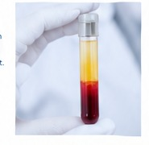

Ärztlich begleitete Behandlungen zur individuellen Korrektur
mimischer und statischer Falten sowie zum Ausgleich von
Volumenverlust und zur Unterstützung der Hautqualität.
1. Ästhetische Medizin – individuell und ärztlich begleitet
In unserer Praxis steht die ärztliche Beratung im Mittelpunkt.
Gemeinsam besprechen wir Ihre Wünsche, die Ausgangssituation,
geeignete Behandlungsmöglichkeiten sowie mögliche Risiken,
Nebenwirkungen und Alternativen.
Nicht jede Falte und nicht jede Veränderung benötigt dieselbe
Behandlung. Die Wahl des Verfahrens richtet sich unter anderem
nach Anatomie, Haut- und Gewebestruktur, Muskelaktivität und dem
individuellen Behandlungsziel.
Unser Ansatz
Medizinisch begründete Indikation, individuelle Beratung und eine
sorgfältige Behandlung stehen im Vordergrund.
2. Botulinumtoxin (Botox)
Botulinumtoxin reduziert gezielt die Aktivität bestimmter
Muskeln und kann dadurch mimische Falten abschwächen.
Typische Anwendungsbereiche:
Zornesfalten (Glabella)
Stirnfalten
Lachfalten / Krähenfüße
Bunny Lines
Lippenfältchen
Kinn & Mundwinkel
Migräne
Wirkungseintritt: typischerweise nach einigen Tagen
Wirkungsdauer: individuell, meist mehrere Monate
Behandlungszeit: häufig etwa 15–30 Minuten
3. Hyaluronsäure-Filler
Hyaluronsäure ist ein natürlicher Bestandteil des Körpers.
Als Filler kann sie Volumen ergänzen und bestimmte Falten,
Vertiefungen oder Konturen behandeln.
Typische Anwendungsbereiche:
Nasolabialbereich
Marionettenfalten
Lippen
Wangen und Gesichtskonturen
Wirkung: Volumenveränderung häufig unmittelbar sichtbar
Haltbarkeit: abhängig von Präparat, Bereich und individuellen Faktoren
Eigenschaft: Hyaluronsäure-Filler sind grundsätzlich biologisch abbaubar
4. PRP (Platelet-Rich Plasma)
Bei der PRP-Behandlung wird eine kleine Menge körpereigenen
Blutes aufbereitet. Das gewonnene plättchenreiche Plasma wird
anschließend für die jeweilige Behandlung eingesetzt.
Mögliche ästhetische Anwendungsbereiche:
Verbesserung der Hautqualität
Feine Linien
Unterstützung der Hautregeneration

Wirkungseintritt: nicht unmittelbar; Veränderungen entwickeln sich im Verlauf
Verlauf: abhängig von Ausgangssituation und Behandlungsplan
PRF ist ein Verfahren auf Basis des eigenen Blutes. Bei der
Aufbereitung entsteht zusätzlich ein Fibrinnetz, das die
enthaltenen Blutbestandteile in einer Matrix einschließt.
Mögliche ästhetische Anwendungsbereiche:
Verbesserung der Hautqualität
Unterstützung der Geweberegeneration
Feine Linien und ausgewählte Hautareale
Wirkungseintritt: individuell und im Verlauf
Verlauf: abhängig von Ausgangssituation und Behandlungsplan
Die vier Verfahren unterscheiden sich deutlich in ihrem
Wirkprinzip und ihren möglichen Einsatzbereichen.
Merkmal
Botulinumtoxin
Hyaluronsäure
PRP
PRF
Wirkprinzip
Reduziert Muskelaktivität
Ergänzt Volumen
Fördert Regeneration
Fördert Regeneration
Geeignet für
Mimische Falten
Volumenverlust & statische Falten
Hautqualität, feine Linien
Hautqualität, Geweberegeneration
Typische Bereiche
Stirn, Zornesfalte, Krähenfüße
Lippen, Wangen, Nasolabialbereich
Gesicht, Hals, Dekolleté (je nach Indikation)
Gesicht, Hals, Dekolleté (je nach Indikation)
Wirkungseintritt
nach 3–5 Tagen
sofort sichtbar
nach einigen Tagen
nach einigen Tagen bis Wochen
Dauer der Wirkung
ca. 3–4 Monate
ca. 6–12 Monate
individuell, oft mehrere Monate
individuell, oft mehrere Monate
Behandlungszeit
ca. 15–30 Minuten
ca. 15–30 Minuten
ca. 30–60 Minuten
ca. 30–60 Minuten
Besonderheit
effektive Faltenreduktion
biologisch abbaubar
autolog, minimal invasiv
längere Wirkungsdauer durch Fibrin
7. Kombination der Verfahren
In bestimmten Fällen können unterschiedliche Verfahren kombiniert
werden. Ob dies sinnvoll ist, hängt von der individuellen
Ausgangssituation und dem Behandlungsziel ab.
8. Risiken und Nebenwirkungen
Wie bei jeder medizinischen Behandlung können Nebenwirkungen
auftreten, darunter Rötungen, Schwellungen, Blutergüsse oder
Druckempfindlichkeit.
Je nach Verfahren sind auch seltene, ernsthafte Komplikationen
möglich. Eine sorgfältige ärztliche Untersuchung und
Aufklärung sind deshalb wichtig.
9. Häufige Fragen
Antworten auf häufige Fragen zu Schmerz, Wirkungseintritt,
Haltbarkeit, Nachsorge und Kombinationen finden Sie weiter unten.
10. Persönliche Beratung
In einem persönlichen Gespräch besprechen wir Ihre Wünsche,
Möglichkeiten, Risiken und mögliche Alternativen.
Wichtig:
Die Informationen auf dieser Seite ersetzen keine individuelle
ärztliche Untersuchung und Beratung. Ob eine Behandlung medizinisch
und individuell geeignet ist, wird vor einer Behandlung beurteilt.
Häufige Fragen
Die Injektionen können als kurzer Stich oder als leichtes Brennen
empfunden werden. Das Empfinden ist individuell und hängt auch vom
behandelten Bereich ab.
Bei Botulinumtoxin entwickelt sich die Wirkung über mehrere Tage.
Bei Hyaluronsäure kann eine Volumenveränderung häufig unmittelbar
sichtbar sein. PRP und PRF wirken nicht wie ein klassischer
Volumenfiller; Veränderungen entwickeln sich im weiteren Verlauf.
Die Wirkungsdauer ist individuell unterschiedlich und beträgt
typischerweise mehrere Monate.
Das hängt unter anderem vom verwendeten Präparat, dem
Behandlungsbereich und individuellen Faktoren ab. Eine pauschale
Angabe ist deshalb nicht für jede Behandlung möglich.
Das hängt vom Verfahren, dem Umfang der Behandlung und Ihrer
individuellen Reaktion ab. Rötungen, Schwellungen oder kleine
Blutergüsse können vorübergehend sichtbar sein.
Die Empfehlungen hängen vom jeweiligen Verfahren und der behandelten
Region ab. Sie erhalten nach der Behandlung konkrete Hinweise zur
Nachsorge.
In bestimmten Situationen können verschiedene Verfahren kombiniert
werden. Ob dies sinnvoll ist, wird individuell nach Beratung und
Beurteilung entschieden.
Eine Behandlung kann unter anderem bei bestimmten Erkrankungen,
Infektionen oder Entzündungen im vorgesehenen Behandlungsbereich
oder aufgrund anderer individueller medizinischer Umstände
ungeeignet sein.
Persönliche ärztliche Beratung
Sie interessieren sich für eine Behandlung mit Botulinumtoxin,
Hyaluronsäure, PRP oder PRF?
Bitte vereinbaren Sie Ihren Termin persönlich vor Ort in unserer Praxis